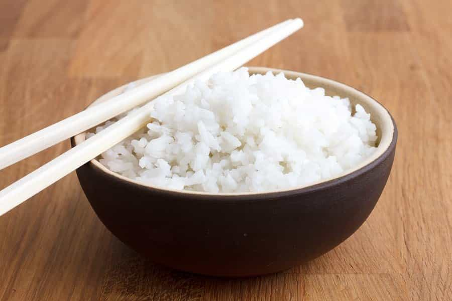
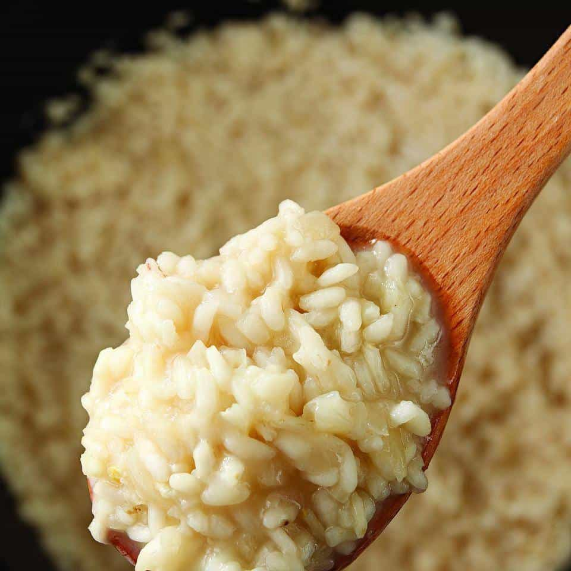

Bruno is a young man who used to dismiss red pillers as alarmists. Then he spent a semester in a college campus and became one himself. Now he educates himself through the internet and a library card.


Rice has been a vital part of diets throughout the world (particularly in Asia) for thousands of years. Today, it’s the second most grown grain after corn. Considering most corn grown today is used to feed cattle (expand later), rice is actually the most widely consumed grain worldwide. That being said, it’s amazing how many people (especially in the West) can’t cook rice without a rice cooker. But should civilization fall, there’ll be no electricity to power rice cookers. So I’ll share a few recipes I use to make some damn good rice.

First up is your no-nonsense cup of plain rice. It’s the easiest to make and my go-to for when I just need some rice to go with meat or chicken. The simplest way to make it is to simply measure the rice, put it in a saucepan and cover with twice as much water. So if you’re making one cup of rice, use two cups of water.
For extra flavor, you could fry a bit of garlic or onions on the saucepan before adding the rice. Bring the water to a boil, add salt to taste, and wait for the water level to drop a little. Once it’s almost down to the level of the rice, lower the heat of the stove to minimum, cover the saucepan and let it cook for twenty minutes. Then remove from the fire, remove the lid and stir the rice a little. You should be left with some nice and fluffy rice with no excess moisture.

Now we’re getting to some fancier stuff. Risotto is Italy’s signature rice dish, known for it’s creamy texture and rich flavor. Making it is more time consuming than normal rice, but it’s still relatively simple. Serve it on special occasions or when you want to impress. First, you’ll need to cut some onions into chunks, make them a bit bigger than your thumbnail. Then melt a bit of butter on a deep pan and throw the onions in (about 1/2 an onion per cup of rice should work nicely).
Pan should be similar to this one
Cook the onions on medium heat until they’re translucent and then add risotto rice. This is the most important detail. The rice you use must be risotto rice, otherwise the texture won’t be the same. Even supermarkets sell risotto rice nowadays, so it shouldn’t be hard to find.
Stir the rice together with the onions, splash in a bit of wine if you have some handy, and then start adding liquid until it just about covers the rice (broth works best, but in a pinch water can work). For the next 20-30 minutes you’re gonna have to keep stirring the rice and adding liquid as it starts to dry up. It should be ready once the grains of rice feel a bit soft (but not too much).
Remove the pan from the fire and cover it with a clean piece of cloth for 5-10 minutes. Add some cheese (preferably parmesan) or extra taste and enjoy.

For my final recipe, we’re going with pilaf. It’s a staple dish in India and parts of the Middle East. In terms of preparation, it’s easier to make than risotto, but harder than standard rice. So if you’re feeling up for it, it’s a nice way to improve your meal.
In order to make it, you’ll have to cut some onions into chunks about twice as big as your thumbnail. Heat up some oil or butter in a pan and add the onions (as with risotto, 1/2 an onion per cup of rice works best). The oil you choose will, in this case, affect the flavor so choose one you like. Personally, I like to use either butter or sesame oil.
Cook the onions on medium heat until they’re halfway transparent, then add the uncooked rice. Add a bit more oil and toast the uncooked rice together with the onions for a few minutes. Once it’s toasted a bit, add about 1 3/4 cups of water or broth per cup of rice to the pan, bring to a boil, set on low heat and cover. Let it cook for some 15-16 minutes, then remove the pan from the stove and leave it covered for some 5-6 more minutes before serving. The resulting rice goes well mixed with meat or vegetables.
A deeper look into rice is beyond the scope of this article, but I hope this was a good starting point. Any man benefits greatly from being able to cook. Rice, being such a common foodstuff, should be no exception. Even if civilization doesn’t fall, being able to make good rice is valuable in of itself.
Read More: How To Cook Four Delicious Entrées